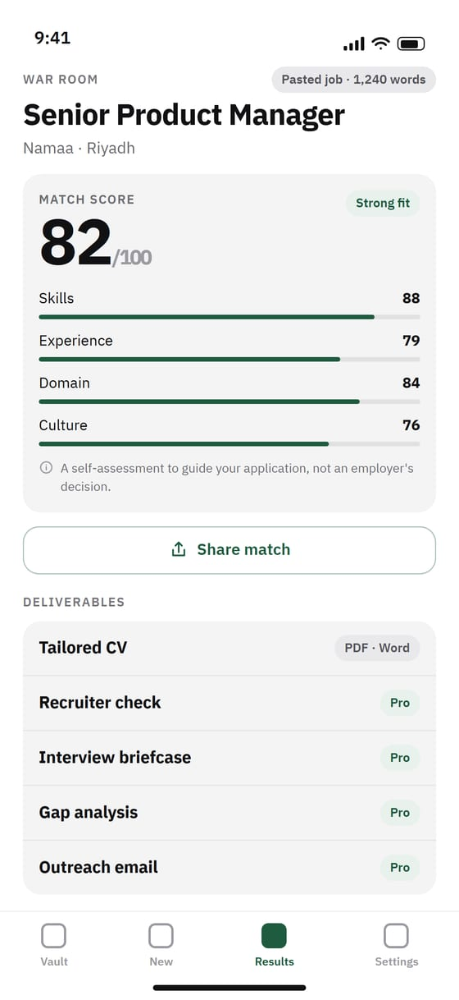

Build your career record once. Paste any job. Fitt researches the company and the role, then tailors a CV and interview prep that fit — with every claim traceable to what you logged.
iPhone and iPad · Arabic and English · العربية

Log achievements, projects, metrics and certificates once. Your Vault is stored on your iPhone; for each analysis, only the job and the parts of your Vault that match it are sent (after you allow it) — and not kept.
Fitt reads the company, recent news, and the person who posted the role — every fact sourced.
A clear match score, the gaps against your Vault, and the fastest honest way to close each one.
An ATS-friendly CV (PDF or Word), a Recruiter check, an interview briefcase with STAR answers and negotiation scripts, outreach email and a LinkedIn summary.
Every line traces to your real record — tap “Why this line?” to see its source.
Full English and Arabic, right-to-left throughout.